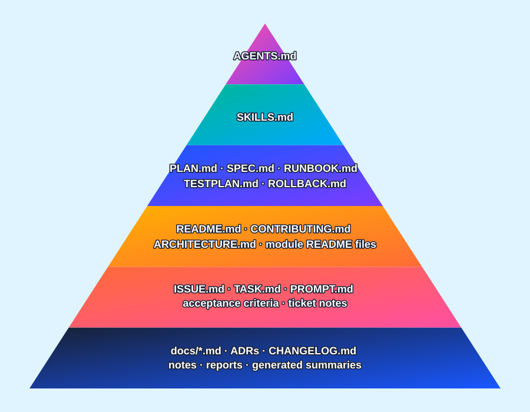

AI agents do not treat every repository file equally. Some markdown files act like operating rules, some act like project maps, and some are supporting evidence at the edge of the trail.
Expertise: BeginnerAudience: AI users, repository owners, technical teamsUse when: Preparing a repo for agent-assisted work
The simple idea
A repository can contain many markdown files, but an AI agent needs to know which ones are instructions, which ones are explanations, and which ones are merely supporting notes.
The higher a file sits in the hierarchy, the more it should shape agent behavior before the agent edits, runs commands, or proposes changes.
Why beginners should care
Without clear hierarchy, an agent may follow stale notes, skip safety rules, misunderstand the project, or treat a random task file as more authoritative than the team’s actual operating rules.
Good context order prevents the agent from turning the repo into a confetti cannon with commit access.
The pyramid
This graphic shows a practical hierarchy. It is not about which file is “better.” It is about which file usually has more authority over agent behavior.

What each layer does
The file names are the important part. Fancy wording can come later. First, make the map readable.
Strongest rules
AGENTS.md
Use this for agent behavior rules, forbidden actions, validation requirements, approval boundaries, and repository-wide operating instructions.
Specialized work
SKILLS.md
Use this for project-specific procedures, repeatable workflows, safe command patterns, review habits, and specialized agent capabilities.
Execution shape
PLAN.md, SPEC.md, RUNBOOK.md
Use these to define intent, requirements, rollout steps, operational procedures, acceptance criteria, and recovery expectations.
Project truth
README.md, CONTRIBUTING.md
Use these for project purpose, setup, architecture overview, local development, contribution rules, and human-friendly onboarding.
Task scope
ISSUE.md, TASK.md, PROMPT.md
Use these for specific work items, requested changes, prompt constraints, and current delivery context.
Supporting detail
CHANGELOG.md, docs/*.md, notes/*.md, logs/*.md
Use these for release history, known changes, background material, meeting notes, evidence, design history, troubleshooting records, and lower-priority context.
Good use and risky use
The goal is not to create markdown clutter. The goal is to put the right instructions in the right place.
Good use
Place high-level agent rules near the repository root, keep specialized procedures in predictable files, and use task documents to narrow scope rather than override safety rules.
Risky use
Bury critical instructions in random folders, scatter conflicting rules across many files, or assume the agent will discover every note before acting.